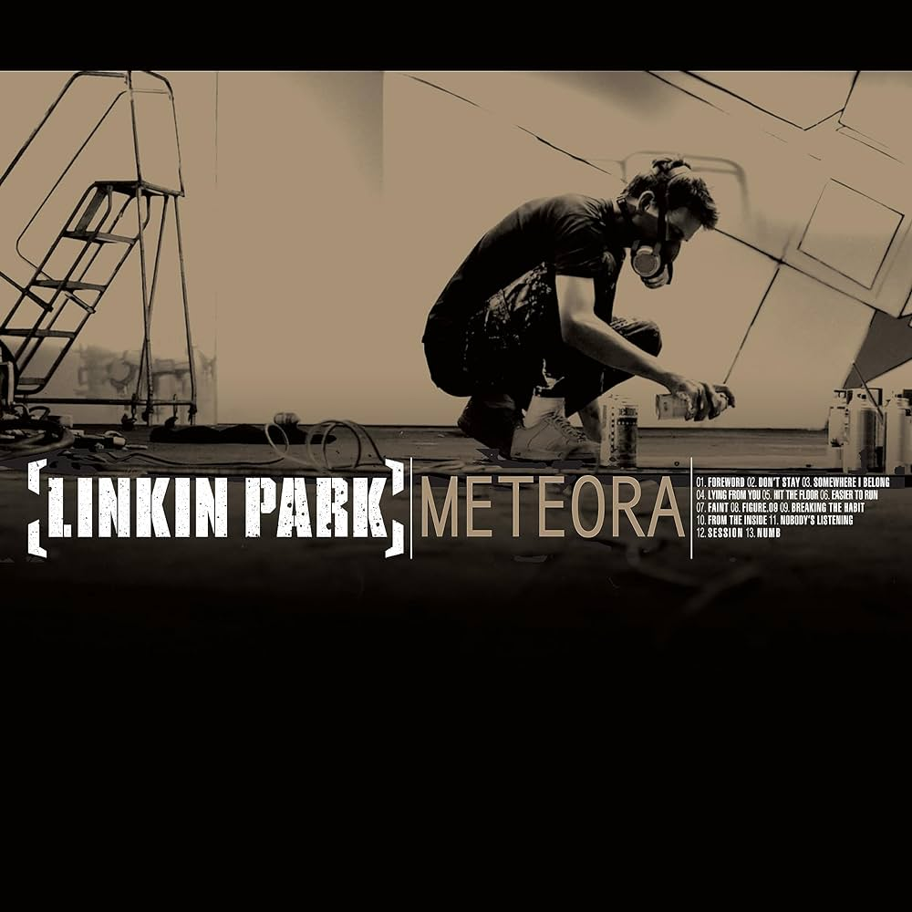

Hybrid Theory
Hybrid Theory es el primer álbum en el que Mike Shinoda trabaja como diseñador gráfico antes de convertirse en un músico profesional, ha declarado que la banda había mirado a través de libros en busca de inspiración sobre cómo se presentan por primera vez. El resultado fue un soldado-alado que Shinoda se ilustra. De acuerdo con Chester Bennington , la idea de que el soldado con alas de libélula fue describir la mezcla de elementos musicales suaves y duros por el uso de las miradas hastiado del soldado y toca frágil de las alas.

Meteora
Meteora es zun disco cargado de una estética plenamente callejera, con grandes influencias del grafiti y con el estilo único que les caracteriza. El nombre del mismo estuvo inspirado en la región rocosa de Meteora en Grecia, donde están construidos numerosos monasterios encima de las piedras.

Minutes to Midnight
En una entrevista, Chester explicó el porqué del nombre del nuevo álbum. El título hace referencia al Doomsday Clock, creado por científicos de la ciudad de Chicago durante la Segunda Guerra Mundial.Este reloj indica «cuán cerca de la medianoche estamos» (en términos metafóricos, significa «cuán cerca del final estamos») en forma de minutos. Los diferentes acontecimientos ocurridos durante y después de la Segunda Guerra alteraron los minutos restantes para la «medianoche». Actualmente estamos a «cinco minutos».